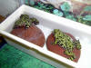
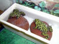
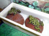

FIRE BELLIES

Click on our pictures to see us better.
Fire bellies are easy to care for. They enjoy a "pond" to bathe in and they do a lot! They eat small crickets dusted with Calcium and Vitamin D3 once or twice a week. When these little guys get out of their water they like to hide in their toad house or under their plants. These are very active amphibians, always moving, jumping, swimming and hopping and consequently at least a 10 gallon tank is a good size for them to move around. They will enjoy a light to keep them warm during the day and most definitely will need a screen on their tank. They think they are tree frogs sometimes and you may find them climbing up the side of their tank and when they reach the top, will jump out and explore your house. So, a screen is an essential for these toads. They should not be kept with any other amphibians because they are toxic to them so they need to be alone. They also will croak frequently which sounds like little squeaks. All in all, these are fun to watch and have as pets especially for the novice amphibian keeper.